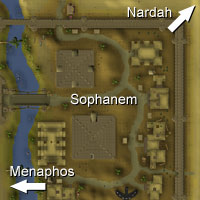

")
Sophanem (Members)
Warning | Introduction | Location | Points of Interest | Personalities
Quests | Dangers of the Stricken City | Miscellaneous
Quests | Dangers of the Stricken City | Miscellaneous
Warning
You must have started Icthlarin's Little Helper to gain access to Sophanem.
Sophanem lies in the far south of the Kharidian Desert and is not an easy place to reach unharmed. It is advised that you take a lot of water with you, as well as wearing a full set of desert robes. For more information about surviving the harsh desiccation of the desert, read the Terrain Survival Guide.
Introduction

Sophanem is dominated by two great pyramids, where the tombs of their ancient kings and priests are hidden from the thieving fingers of wandering adventurers. Wandering about outside these mighty edifices is a devout follower of Icthlarin, the Sphinx. She is an ancient and wise creature well-acquainted with the history of RuneScape, but only willing to speak openly with cats.
Location

North-east of Sophanem is the Jaleustrophos pyramid, better known to the world as the Agility Pyramid, and further beyond that is the town of Nardah.
North-west from Sophanem is another pyramid, that of Jaldroacht, an ancient and foreboding structure that all who visit it could swear was touched by an eldritch evil older than human civilisation.
Points of Interest

The town still manages some industry, though particularly light-fingered adventurers might like to plumb the tombs of the pyramid Jalsavrah (in Pyramid Plunder), where the Guardian Mummy has arranged for tomb robbers to earn a few trinkets.
The Great Temple in the west of the city is home to a number of priests, as well as the High Priest of Icthlarin, who is worth talking to if you are confused about the state of affairs in Sophanem.
After completing Contact! a bank will become available in the north-east of the city.
Personalities

The Sphinx is older than any living inhabitant of Sophanem, and is well acquainted with the secret histories of RuneScape. She prefers the company of cats, though, so adventurers are unlikely to gain any useful information without the assistance of a pet feline.
|

As the leader of the Church of Icthlarin, and the guardian of the pyramids of Sophanem, it falls to the High Priest to ensure that the devourer - Icthlarin's godly foe - gains no foothold in the city. He has other matters on his mind of late, though, such as how to lift the plagues from Sophanem.
|
|
| The Sphinx can be found in the centre of the city. | The High Priest can be found in the Great Temple in the west of the city. |
Quests
The following quests can be started in Sophanem:
- Contact! (Members)
- Dealing with Scabaras (Members)
Dangers of the Stricken City
|
One of the many plagues that has fallen upon Sophanem caused the frogs of the River Elid to flood into the city. Not only that, the frogs were afflicted with a disease, which has spread from them to the rest of the inhabitants of the city, human and animal alike.
|

Plagues of locusts are a typical punishment sent down by the gods, and in Sophanem it is no different. What few crops the city maintained have been eaten, and now the hungry creatures lurk in the shadows waiting for a tasty adventurer to wander by. They are soft creatures, though, and their bite is far nastier than their hide.
|
|
| Plague frogs can be found on the banks of the River Elid. | Locusts can be found in the east of the city. |

Jackals are cunning animals with a powerful pack mentality. You will almost never find a jackal alone, as their method of hunting is based on working together. Jackals are not powerful enemies, but if you have just crossed the desert without much water...
|
| Jackals can be found just north of the locked city gates. |
Miscellaneous
- One of the rewards in Pyramid Plunder is a golden sceptre that holds the power to teleport you to a number of pyramids, one of which is Jalsavrah in Sophanem, giving you a quick route to the city.
- You must visit Sophanem to get clothes for Ali Morrisane in the Rogue Trader task; you will have to speak with Siamun, who can be found in the east of the city.

More articles in
Cities and Towns
|
|